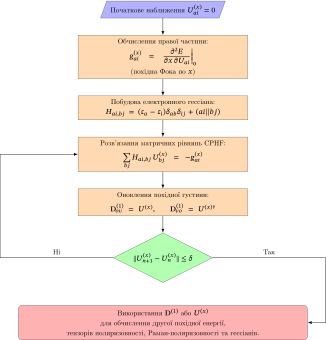

Квантово-механічні методи обчислення
Частина III Властивості молекул
«Ми змушені визнавати, що кожне спостереження неминуче порушує явище, але водночас саме спостереження й дає нам знання про нього.»
— Нільс Бор
7 Молекулярні властивості як похідні енергії
У квантовій хімії енергія \(E\) молекули є основним об’єктом розрахунків, але вона не єдина величина, що визначає поведінку системи. Переважна більшість експериментальних спостережуваних — це похідні енергії за певними зовнішніми параметрами: електричним полем, магнітним полем, координатами ядер, формою потенціалу, навантаженням тощо. Саме тому аналітичні похідні енергії відіграють фундаментальну роль у квантовій теорії молекулярних властивостей.
§ 7.1 Молекулярні властивості як похідні енергії
Енергія квантової системи залежить від зовнішнього параметра \(x\), який може описувати дію електричного або магнітного поля, зміну геометрії молекули, деформацію потенціалу тощо:
\(\seteqnumber{0}{7.}{0}\)\begin{equation} E = E(x). \label {eq:E_x_def} \end{equation}
Для малих змін параметра виконують ряд Тейлора:
\(\seteqnumber{0}{7.}{1}\)\begin{equation} E(x)= E^{(0)} + E^{(1)}x + \tfrac 12 E^{(2)}x^2 + \tfrac 16 E^{(3)}x^3 + \dots , \label {eq:E_Taylor} \end{equation}
де
\(\seteqnumber{0}{7.}{2}\)\begin{equation} E^{(n)} = \left .\frac {d^n E}{dx^n}\right |_{x=0}. \label {eq:E_n_def} \end{equation}
Кожна похідна має фізичний зміст, оскільки описує реакцію енергії на зовнішнє збурення. Розглянемо кілька фундаментальних прикладів.
Дипольний момент та поляризовність.
Почнемо з фундаментального визначення. Дипольний момент молекули — це зміна енергії при малому збільшенні однорідного електричного поля \(\mathcal {E}\):
\(\seteqnumber{0}{7.}{3}\)\begin{equation} \mu = -\,\left .\frac {dE}{d\mathcal {E}}\right |_{\mathcal {E}=0}. \label {eq:dipole_def} \end{equation}
Іншими словами, дипольний момент — це лінійний коефіцієнт у розкладі енергії за полем. Однак цю ж думку можна подати з іншого боку: розглянемо розклад самого дипольного моменту за полем.
Дипольний момент у полі \(\mathcal {E}\) змінюється так:
\(\seteqnumber{0}{7.}{4}\)\begin{equation} \mu (\mathcal {E}) = \mu ^{(0)} + \alpha \,\mathcal {E} + \tfrac 12 \beta \,\mathcal {E}^2 +\dots , \label {eq:mu_Taylor} \end{equation}
де
-
• \(\mu ^{(0)}\) — власний дипольний момент у відсутності поля;
-
• \(\alpha \) — поляризованість;
-
• \(\beta \) — друга гіперполяризованість;
-
• наступні члени відповідають нелінійному відгуку.
Загалом, повний дипольний момент \(\mu (\mathcal {E})\) складається з:
-
• перманентного дипольного моменту \(\mu ^{(0)}\) — існує завжди (якщо \(\mu ^{(0)} \neq 0\)),
-
• наведеного дипольного моменту — виникає під дією поля і включає як лінійний (\(\alpha \mathcal {E}\)), так і нелінійні (\(\beta \mathcal {E}^2\), \(\gamma \mathcal {E}^3\) тощо) вклади.
Тепер використаємо факт, що енергія — це інтеграл взаємодії дипольного моменту з полем:
\(\seteqnumber{0}{7.}{5}\)\begin{equation} E(\mathcal {E}) = E_0 - \int _0^{\mathcal {E}} \mu (\mathcal {E}')\, d\mathcal {E}'. \label {eq:E_as_integral_of_mu} \end{equation}
Підставляємо розклад (7.5):
\(\seteqnumber{0}{7.}{6}\)\begin{equation} E(\mathcal {E}) = E_0 - \mu ^{(0)}\mathcal {E} - \tfrac 12 \alpha \,\mathcal {E}^2 - \tfrac 16 \beta \,\mathcal {E}^3 - \dots \label {eq:E_expanded_correct} \end{equation}
З цього рівняння вже видно, що:
\(\seteqnumber{0}{7.}{7}\)\begin{equation} \mu ^{(0)} = -\,\left .\frac {dE}{d\mathcal {E}}\right |_{\mathcal {E}=0}, \quad \alpha = \left .\frac {d^2E}{d\mathcal {E}^2}\right |_{\mathcal {E}=0}, \quad \beta = -\,\left .\frac {d^3E}{d\mathcal {E}^3}\right |_{\mathcal {E}=0}, \end{equation}
тобто:
\[ \text {перша похідна енергії дає дипольний момент,} \]
\[ \text {друга похідна енергії дає поляризованість,} \]
\[ \text {третя похідна --- гіперполяризованість.} \]
Саме тому всі електричні властивості природно визначаються похідними енергії за зовнішнім полем.
Почнемо з фундаментального визначення. Сила, що діє на ядро \(A\), визначається як зміна енергії при малому зміщенні координати \(R_A\):
\(\seteqnumber{0}{7.}{8}\)\begin{equation} F_A = -\,\frac {dE}{dR_A}. \label {eq:force_def} \end{equation}
Це є пряме квантово-механічне формулювання принципу:
\[ \text {сила} = -\nabla E. \]
Розглянемо тепер, як сила змінюється при малих зміщеннях ядра. Вона також може бути розкладена в ряд Тейлора:
\(\seteqnumber{0}{7.}{9}\)\begin{equation} F_A(R_A) = F_A^{(0)} + \sum _B k_{AB}\,(R_B - R_B^{(0)}) + \dots , \label {eq:force_Taylor} \end{equation}
де \(k_{AB}\) — коефіцієнти, що описують зміну сили при зміщенні інших ядер.
Коефіцієнти \(k_{AB}\) — це елементи матриці силових констант:
\(\seteqnumber{0}{7.}{10}\)\begin{equation} k_{AB} = \left .\frac {\partial F_A}{\partial R_B}\right |_{0}. \label {eq:force_constants_def} \end{equation}
Тепер скористаємося зв’язком між силою і енергією (7.9). Диференціюємо його за \(R_B\):
\(\seteqnumber{0}{7.}{11}\)\begin{equation} \frac {\partial F_A}{\partial R_B} = -\,\frac {\partial ^2 E}{\partial R_A \partial R_B}. \label {eq:F_derivative_relation} \end{equation}
Таким чином,
\[ k_{AB} = -\,\frac {\partial ^2 E}{\partial R_A \partial R_B}. \]
З іншого боку, друга похідна енергії природно визначає елемент матриці гессіана:
\(\seteqnumber{0}{7.}{12}\)\begin{equation} H_{AB} = \frac {\partial ^2 E}{\partial R_A\,\partial R_B}. \label {eq:nuclear_Hessian_def_fixed} \end{equation}
Отже,
\[ k_{AB} = -H_{AB}. \]
Ядерний гесiян — це другий диференціал енергії за координатами ядер:
\(\seteqnumber{0}{7.}{13}\)\begin{equation} H_{AB} = \frac {\partial ^2 E}{\partial R_A\,\partial R_B}, \end{equation}
і саме ця матриця визначає:
-
• форму та кривизну поверхні потенціальної енергії,
-
• рівноважність геометрії (мінімум, сідлові точки),
-
• вібраційні частоти та нормальні координати.
Зв’язок
\[ F_A = -\frac {\partial E}{\partial R_A}, \qquad k_{AB} = \frac {\partial F_A}{\partial R_B}, \]
призводить до висновку:
\[ H_{AB} = -\,k_{AB}. \]
Таким чином, як електричні,так і механічні властивості молекули описуються єдиним математичним підходом — через похідні енергії за параметрами, що збурюють систему.
Іншими словами, похідні енергії визначають, як молекула реагує на поля або зміни геометрії. Цю реакцію системи на зовнішні збурення називають відгуком.
Концепція відгуку надзвичайно універсальна: практично всі молекулярні властивості можна розглядати як похідні енергії за зовнішніми параметрами — електричним або магнітним полем, координатами ядер (саме цей випадок був детально розглянутий в розділі 8) тощо. В табл. 7.1) наведено узагальнену схему, що показує, як похідні різних порядків визначають ті чи інші властивості .
Як видно, усі ці властивості — від сил та частот до магнітного екранування — описуються похідними енергії різних порядків за різними збуреннями. Таким чином, усі властивості молекули є лише різними проявами одного й того ж принципу: відгуку хвильової функції на зовнішнє збурення.
§ 7.2 Чисельні та аналітичні похідні
Найпростіший спосіб отримати похідну енергії — використати кінцеві різниці.
Одностороння формула (перший порядок точності):
\(\seteqnumber{0}{7.}{14}\)\begin{equation} \frac {dE}{dx} \approx \frac {E(x+h)-E(x)}{h}. \label {eq:finite_diff_forward} \end{equation}
Центральна формула (другий порядок точності):
\(\seteqnumber{0}{7.}{15}\)\begin{equation} \frac {dE}{dx} \approx \frac {E(x+h)-E(x-h)}{2h}. \label {eq:finite_diff_central_1st} \end{equation}
Центральна формула для другої похідної:
\(\seteqnumber{0}{7.}{16}\)\begin{equation} \frac {d^2E}{dx^2} \approx \frac {E(x+h)-2E(x)+E(x-h)}{h^2}. \label {eq:finite_diff_2nd} \end{equation}
Для двох параметрів \(x\) і \(y\) змішана похідна наближено виражається як
\(\seteqnumber{0}{7.}{17}\)\begin{equation} \frac {\partial ^2 E}{\partial x\,\partial y} \approx \frac { E(x+h,\,y+k) - E(x+h,\,y-k) - E(x-h,\,y+k) + E(x-h,\,y-k) }{4hk}. \label {eq:finite_diff_mixed} \end{equation}
Однак такий підхід має суттєві недоліки:
-
• похибка різницевого диференціювання, яка зростає при малих кроках;
-
• необхідність багатьох повних SCF-розрахунків;
-
• неможливість отримати точні частоти коливань у великих системах;
-
• нестабільність для високих похідних та слабких збурень.
У той час як аналітичні формули забезпечують:
-
• точні градієнти і гессіани без чисельних похибок;
-
• значно нижчу обчислювальну складність;
-
• природне включення релаксації електронів;
-
• можливість обробляти великі молекули та складні властивості.
Саме тому в сучасній квантовій хімії більшість властивостей — від геометрій до поляризованостей, силових констант і спектрів — за можливості обчислюються через аналітичні похідні. Аналітичні методи мають високу точність і масштабованість, оскільки дозволяють уникнути чисельних кінцевих різниць.
Втім, аналітичні формули доступні не для всіх методів і не для всіх властивостей. У складніших теоріях (наприклад, CCSD(T) або деяких багатоконфігураційних підходах) повні аналітичні похідні можуть бути недоступні або надто дорогі. У таких випадках застосовують обмежені аналітичні похідні, гібридні схеми або чисто чисельні оцінки.
Важливо відзначити, що аналітичні похідні можливі лише тому, що енергія \(E\) у методах HF та DFT має замкнений аналітичний вигляд. Енергія виражається через інтеграли від відомих базисних функцій, а всі оператори (кулонівський, обмінний, зовнішнього поля) мають чітко визначені математичні формули. Тому похідні будь-якого порядку можна отримати шляхом аналітичного диференціювання цих виразів.
Іншими словами, наявність явного аналітичного виразу для енергії дозволяє обчислювати \(\frac {dE}{dx}\), \(\frac {d^2E}{dx^2}\), а за потреби й похідні вищих порядків, не вдаючись до чисельних кінцевих різниць.
§ 7.3 Варіаційні методи та залежність енергії від параметрів
Багато важливих квантовохімічних методів, зокрема HF, DFT і CASSCF, є варіаційними. Це означає, що їхня хвильова функція \(\Psi \) залежить від набору варіаційних параметрів \(\mathbf p\), які визначають молекулярні орбіталі. Енергію таких методів можна подати у вигляді
\(\seteqnumber{0}{7.}{18}\)\begin{equation} \label {eq:E_x_p} E = E(x, \mathbf p(x)), \end{equation}
де \(x\) — зовнішній параметр (координата ядра, електричне поле, зміна геометрії тощо).
Позначимо через \(\mathbf p_0(x)\) оптимальні (стаціонарні) параметри для даного \(x\), тобто ті, що задовольняють умову стаціонарності:
\(\seteqnumber{0}{7.}{19}\)\begin{equation} \left .\frac {\partial E(x,\mathbf p)}{\partial p_i}\right |_{\mathbf p=\mathbf p_0(x)} = 0 \qquad \text {для всіх }i. \label {eq:stationarity_p0} \end{equation}
У варіаційних методах (HF, DFT, CASSCF) ця умова виконується.
Тоді повна похідна енергії при зміні \(x\) записується як:
\(\seteqnumber{0}{7.}{20}\)\begin{equation} \frac {dE}{dx} = \left .\frac {\partial E(x,\mathbf p)}{\partial x}\right |_{\mathbf p=\mathbf p^{(0)}(x)} + \sum _i \left .\frac {\partial E(x,\mathbf p)}{\partial p_i}\right |_{\mathbf p=\mathbf p^{(0)}(x)} \frac {d p_{0i}(x)}{dx}. \label {eq:dE_dx_general} \end{equation}
Оскільки для оптимальних параметрів \(\mathbf p^{(0)}(x)\) виконано (7.20), другий член дорівнює нулю, і отримуємо робочу формулу для першої похідної:
\(\seteqnumber{0}{7.}{21}\)\begin{equation} \frac {dE}{dx} = \left .\frac {\partial E(x,\mathbf p)}{\partial x}\right |_{\mathbf p=\mathbf p^{(0)}(x)}. \label {eq:dE_dx_stationary} \end{equation}
Видно, що перші похідні залежать лише від явної залежності \(E\) від \(x\).
Щоб побачити появу лінійної реакції орбіталей явно, запишемо повну другу похідну енергії:
\(\seteqnumber{0}{7.}{22}\)\begin{equation} \frac {d^2E}{dx^2} = \frac {\partial ^2 E}{\partial x^2} + 2 \sum _i \frac {\partial ^2 E}{\partial x\,\partial p_i}\frac {dp_i}{dx} + \sum _{i,j} \frac {\partial ^2 E}{\partial p_i \partial p_j} \frac {dp_i}{dx}\frac {dp_j}{dx} + \sum _i \frac {\partial E}{\partial p_i}\frac {d^2 p_i}{dx^2}. \label {eq:second_derivative_full} \end{equation}
Останній член у (7.23) зникає завдяки умові (7.20), і друга похідна набуває вигляду
\(\seteqnumber{0}{7.}{23}\)\begin{equation} \frac {d^2E}{dx^2} = \frac {\partial ^2 E}{\partial x^2} + 2 \sum _i \frac {\partial ^2 E}{\partial x\,\partial p_i}\frac {dp_i}{dx} + \sum _{i,j} \frac {\partial ^2 E}{\partial p_i \partial p_j} \frac {dp_i}{dx}\frac {dp_j}{dx}. \label {eq:second_derivative_simplified} \end{equation}
У других похідних з’являються складові \(\partial p_i/\partial x\):
Оскільки рівність (7.20) справедлива для всіх \(x\), візьмемо повну похідну по \(x\) від лівої частини (тобто продиференціюємо по \(x\) рівняння стаціонарності):
\(\seteqnumber{0}{7.}{24}\)\begin{equation} \frac {d}{dx}\left [ \left .\frac {\partial E(x,\mathbf p)}{\partial p_i}\right |_{\mathbf p=\mathbf p^{(0)}(x)} \right ] = 0. \label {eq:diff_stationarity_start} \end{equation}
Розкриваємо повну похідну:
\(\seteqnumber{0}{7.}{25}\)\begin{equation} \frac {d}{dx}\left [\frac {\partial E}{\partial p_i}\right ] = \left .\frac {\partial ^2 E}{\partial x\,\partial p_i}\right |_{\mathbf p=\mathbf p^{(0)}(x)} + \sum _j \left .\frac {\partial ^2 E}{\partial p_i \partial p_j}\right |_{\mathbf p=\mathbf p^{(0)}(x)} \frac {d p_j(x)}{dx}. \label {eq:diff_stationarity_explicit} \end{equation}
Оскільки ліва частина рівняння (7.25) дорівнює нулю, отримуємо
\(\seteqnumber{0}{7.}{26}\)\begin{equation} \left .\frac {\partial ^2 E}{\partial p_i \partial p_j}\right |_{\mathbf p=\mathbf p^{(0)}(x)} \frac {d p_j(x)}{dx} = - \left .\frac {\partial ^2 E}{\partial x\,\partial p_i}\right |_{\mathbf p=\mathbf p^{(0)}(x)}. \label {eq:intermediate_CPHF} \end{equation}
Позначимо матрицю других похідних по параметрах (електронний гессіан у просторі параметрів)
\(\seteqnumber{0}{7.}{27}\)\begin{equation} H_{ij}(x) \equiv \left .\frac {\partial ^2 E(x,\mathbf p)}{\partial p_i \partial p_j}\right |_{\mathbf p=\mathbf p^{(0)}(x)}, \label {eq:H_matrix_def} \end{equation}
і вектор правої частини (змішана друга похідна)
\(\seteqnumber{0}{7.}{28}\)\begin{equation} g_i^{(x)} \equiv \left .\frac {\partial ^2 E(x,\mathbf p)}{\partial x\,\partial p_i}\right |_{\mathbf p=\mathbf p^{(0)}(x)}. \label {eq:g_vector_def} \end{equation}
Тоді рівняння (7.27) компактно записується як
\(\seteqnumber{0}{7.}{29}\)\begin{equation} \sum _j H_{ij}(x)\;\frac {d p_j^{(0)}(x)}{dx} = -\,g_i^{(x)}. \label {eq:CPHF_derived_compact} \end{equation}
Якщо матриця \(H(x)\) невироджена (має обернену), то формально
\(\seteqnumber{0}{7.}{30}\)\begin{equation} \frac {d\mathbf p^{(0)}(x)}{dx} = -\,\mathbf {H}^{-1}(x)\,\mathbf g^{(x)}. \label {eq:dpdx_solution} \end{equation}
Отримане рівняння є системою, що має назву зв’язано-збуреної (Coupled–Perturbed) у загальному вигляді. Воно визначає лінійну реакцію оптимальних варіаційних параметрів на малу зміну зовнішнього параметра \(x\).
Конкретний вигляд цієї системи залежить від того, які саме параметри \(p_i\) використано для задання орбіталей. У методах HF та DFT параметри \(p_i\) відповідають елементам матриці орбітальних обертань, а величини \(dp_i/dx\) є їхньою лінійною реакцією. У цьому випадку матриця \(H\) і вектор \(g^{(x)}\) набувають звичних аналітичних форм, що приводить до стандартних рівнянь CPHF/CPKS.
§ 7.4 Аналітичні похідні в методі Хартрі-Фока
У попередньому розділі ми розглянули загальний варіаційний підхід: енергію \(E(x,\mathbf p)\), оптимальні параметри \(\mathbf p^{(0)}(x)\), електронний гессіан \(H\) та рівняння (7.31) яке формально описує, як змінюються оптимальні варіаційні параметри при малому збуренні зовнішнього параметра \(x\).
7.4.1 Орбітальні параметри в методі Хартрі–Фока
У HF хвильова функція — це детермінант Слейтера, повністю визначений набором молекулярних орбіталей
\[ \phi _p = \sum _\mu C_{\mu p}\,\chi _\mu . \]
Проте варіювати матрицю коефіцієнтів \(\mathbf C\) безпосередньо неможливо через вимогу ортонормованості орбіталей:
\[ \langle \phi _p|\phi _q\rangle =\delta _{pq}. \]
Тому варіацію формулюють через нескінченно малі орбітальні обертання. У детермінанті фізично значимими є лише ті обертання, що змішують зайняті та віртуальні орбіталі: обертання всередині підпросторів зайнятих або віртуальних МО не змінюють хвильову функцію, а лише переставляють базисні функції всередині однаково заселених підпросторів.
Допустима зміна зайнятої орбіталі має вигляд:
\(\seteqnumber{0}{7.}{31}\)\begin{equation} \label {eq:small_rotation_intro} \phi _i \;\longrightarrow \; \phi _i^{(0)} + \sum _a U_{a i}\,\phi _a^{(0)}, \end{equation}
де змішуються лише зайняті \(\phi _i\) з віртуальними \(\phi _a\), а матриця орбітальних обертань має антисиметричні блоки:
\[ U_{ai} = -U_{ia}. \]
Така заміна означає ось що зайнята орбіталь під дією збурення трохи «втрачає свою форму» і набуває легку домішку віртуальних орбіталей. Віртуальні МО відіграють роль можливих «напрямків деформації», у які електронна хмара може відхилитися, реагуючи на зовнішній вплив. В малих базисах часто спостерігають занижену поляризовність, погану відтворюваність похідних енергії. Чим багатший базис, тим повніший набір можливих напрямків деформації й тим адекватніше описується фізична відповідь електронів.
У підході орбітальних обертань саме коефіцієнти
\(\seteqnumber{0}{7.}{32}\)\begin{equation} \label {eq:p_HF_definition} p_{ai} \equiv U_{ai} \end{equation}
виступають справжніми варіаційними параметрами. Вони кількісно описують, наскільки кожна зайнята орбіталь допускає домішку конкретної віртуальної, тобто наскільки електронна хмара може деформуватися в цьому напрямку. Таким чином, вектор параметрів
\[ \mathbf p = \{U_{ai}\} \]
є компактним описом усіх фізично значущих змін хвильової функції в межах HF-варіації.
Похідні параметрів. Коли зовнішній параметр \(x\) змінюється на \(dx\), оптимальні орбіталі переходять у нові оптимальні орбіталі для \(x+dx\). Лінійна зміна МО має вигляд
\(\seteqnumber{0}{7.}{33}\)\begin{equation} \label {eq:HF_MO_derivative} \frac {d\phi _i}{dx} = \sum _a U_{ai}^{(x)} \phi _a , \end{equation}
що визначає коефіцієнти
\[ U_{ai}^{(x)} \equiv \frac {dU_{ai}}{dx}. \]
Отже, у HF величини
\[ \frac {dp_{ai}}{dx} = \frac {dU_{ai}}{dx} \equiv U_{ai}^{(x)} \]
є лінійною реакцією зайнятих орбіталей на збурення \(x\), тобто тим, як зайняті МО змішуються з віртуальними при зміні зовнішнього параметра.
Рівняння CPHF. Матриця \(\mathbf H\) у просторі параметрів \(U_{ai}\) набуває вигляду
\(\seteqnumber{0}{7.}{34}\)\begin{equation} \label {eq:H_ai_bj_def} H_{ai,bj} = \left .\frac {\partial ^2 E}{\partial U_{ai}\,\partial U_{bj}}\right |_{\mathbf U= 0}. \end{equation}
Аналогічно, компоненти вектора змішаної похідної:
\(\seteqnumber{0}{7.}{35}\)\begin{equation} \label {eq:g_ai_def} g_{ai}^{(x)} = \frac {\partial }{\partial U_{ai}}\left .\frac {\partial E}{\partial x}\right |_{x = 0, \mathbf U= 0}. \end{equation}
Після цих підстановок рівняння (7.31) набуває вигляду
\(\seteqnumber{0}{7.}{36}\)\begin{equation} \label {eq:CPHF_matrix_general} \sum _{b j} H_{ai,bj}\;U_{bj}^{(x)} = -g_{ai}^{(x)}. \end{equation}
Це і є загальна форма зв’язано–збурених рівнянь (CPHF). Вони визначають реакцію МО на довільне збурення \(x\).
Приклад
Розглянемо спрощену систему, де є одна зайнята орбіталь \(i\) та одна віртуальна орбіталь \(a\), розкладені за тими самими базисними функціями \(\{\chi _\mu \}\):
\[ \phi _i^{(0)} = C_{1i}\chi _1 + C_{2i}\chi _2 + C_{3i}\chi _3,\qquad \phi _a^{(0)} = C_{1a}\chi _1 + C_{2a}\chi _2 + C_{3a}\chi _3. \]
Після нескінченно малого обертання орбіталі змінюються за правилом (7.32):
\[ \phi _i = \phi _i^{(0)} + U_{ai}\phi _a^{(0)}. \]
Якщо система залежить від зовнішнього параметра \(x\), то в першому порядку відповідь орбіталі записується як
\[ \phi _i(x) \approx \phi _i^{(0)} + x\sum _a U_{ai}^{(x)}\,\phi _a^{(0)}, \]
де \(U_{ai}^{(x)}\equiv dU_{ai}/dx\) — саме ті похідні, що даються рівняннями CPHF.
Підставивши явні розклади у базисі \(\{\chi _\mu \}\), отримуємо рівняння для коефіцієнтів:
\[ C_{\mu i}(x) \approx C_{\mu i} + x\sum _a U_{ai}^{(x)}\,C_{\mu a}, \qquad \mu =1,2,3. \]
Отже, похідні \(U_{ai}^{(x)}\) описують, як при малому змінені \(x\) змінюються коефіцієнти зайнятої орбіталі в напрямку коефіцієнтів віртуальної орбіталі.
7.4.2 Стандартна форма рівнянь CPHF
У методі HF електронний гессіан у просторі \(U_{ai}\) має вигляд
\(\seteqnumber{0}{7.}{37}\)\begin{equation} \label {eq:H_standard} H_{ai,bj} = (\varepsilon _a - \varepsilon _i)\,\delta _{ab}\delta _{ij} + (ai||bj), \end{equation}
де \((ai||bj)\) — антисиметризовані двоелектронні інтеграли.
Праві частини \(g_{ai}^{(x)}\) залежать від збурення \(x\). Наприклад, при ядерному русі це:
\[ g_{ai}^{(x)} = \langle \phi _a | \hat F^{(x)} | \phi _i \rangle , \]
де \(\hat h^{(x)}\) — похідна одноелектронного гамільтоніана, а \(\hat V^{(x)}_{ee}\) — похідна фоківського потенціалу.
Таким чином, рівняння (7.37) у явному вигляді стає
\(\seteqnumber{0}{7.}{38}\)\begin{equation} \label {eq:CPHF_explicit} (\varepsilon _a - \varepsilon _i)\,U_{ai}^{(x)} + \sum _{b j} (ai||bj)\,U_{bj}^{(x)} = -\,g_{ai}^{(x)}. \end{equation}
Це — стандартні рівняння CPHF/CPKS, які визначають лінійну реакцію молекулярних орбіталей при довільному збуренні \(x\).
Розв’язавши (7.39), отримуємо \(U_{ai}^{(x)}\), тобто як зайняті орбіталі «змішуються» з віртуальними у відповідь на збурення.
Коментар
Розв’язок рівнянь CPHF (Coupled Perturbed Hartree-Fock) зазвичай є чисельним. У практичних обчисленнях квантової хімії ці рівняння представляють собою велику систему лінійних рівнянь виду \(\mathbf {H} \mathbf {U}^{(x)} = -\mathbf {g}^{(x)}\), де матриця \(\mathbf {H}\) (електронний гессіан) може мати високу розмірність (наприклад, тисячі або мільйони елементів для реальних молекул).
-
• Прямі методи (наприклад, інвертування матриці) використовуються рідко, тільки для малих систем, оскільки вони обчислювально дорогі (\(O(N^3)\) складність, де \(N\) — розмірність).
-
• Ітераційні методи є стандартними для великих систем: наприклад, метод спряжених градієнтів (conjugate gradient), DIIS (Direct Inversion in the Iterative Subspace) або інші солвери для лінійних рівнянь. Вони дозволяють уникнути повного зберігання матриці \(\mathbf {H}\) в пам’яті, обчислюючи її добутки з векторами «на льоту».
Аналітичний розв’язок можливий лише для тривіальних або модельних систем (наприклад, атом водню), але в реальних розрахунках все робиться чисельно з контролем збіжності ітерацій. Якщо збурень багато.

7.4.3 Градієнт (перша похідна) — явний вираз у методі HF
У методі HF умова стаціонарності (7.20) набуває вигляду
\[ \left .\frac {\partial E}{\partial U_{ai}}\right |_{U=U^{(0)}} = 0. \]
Отже, перша похідна енергії визначається лише явною залежністю гамільтоніана від \(x\):
\(\seteqnumber{0}{7.}{39}\)\begin{equation} \label {eq:HF_gradient_basic} \frac {dE}{dx} = \left .\frac {\partial E}{\partial x}\right |_{U=U^{(0)}} . \end{equation}
Одноелектронний внесок. У HF енергія має вигляд
\[ E = \sum _i h_{ii} + \tfrac {1}{2}\sum _{ij}\big ( J_{ij} - K_{ij} \big ), \]
де \(h_{pq}\) — одноелектронна частина, \(J_{ij}\) і \(K_{ij}\) — кулонівський та обмінний інтеграли.
Якщо зовнішній параметр \(x\) змінює ядерний потенціал або інший зовнішній оператор, то перша похідна енергії включає зміну тільки відповідних інтегралів:
\(\seteqnumber{0}{7.}{40}\)\begin{equation} \label {eq:HF_gradient_one_electron} \frac {dE}{dx} = \sum _i \frac {\partial h_{ii}}{\partial x} + \tfrac 12 \sum _{ij} \left ( \frac {\partial J_{ij}}{\partial x} - \frac {\partial K_{ij}}{\partial x} \right ), \end{equation}
оскільки зміна коефіцієнтів МО (тобто зміна \(U_{ai}\)) не дає внеску в першу похідну через стаціонарність.
Форма через матрицю густини. У більш компактній матричній формі:
\(\seteqnumber{0}{7.}{41}\)\begin{equation} \label {eq:HF_gradient_density_matrix} \frac {dE}{dx} = \mathrm {Tr}\!\left [\,\mathbf D\,\frac {\partial \mathbf h}{\partial x}\right ] + \tfrac 12\,\mathrm {Tr}\!\left [\mathbf D\,\frac {\partial (\mathbf J - \mathbf K)}{\partial x}\right ], \end{equation}
де \(\mathbf D\) — матриця густини у базисі АО.
Це класичний вираз градієнта у HF, який використовується для обчислення сил, геометричних градієнтів, похідних по зовнішньому полі тощо.
Важлива властивість. Завдяки умові стаціонарності, у градієнті не з’являються похідні орбітальних обертань \(dU_{ai}/dx\). Інакше кажучи, у HF перша похідна енергії не потребує розв’язку рівнянь лінійної реакції. Всі складні терміни, пов’язані з реакцією МО, виникають лише у другій похідній (у наступному розділі), де вони приводять до системи CPHF.
7.4.4 Друга похідна — явний вигляд у методі HF
У попередніх підрозділах ми показали загальний варіаційний результат
\[ \frac {d^2E}{dx^2} = \frac {\partial ^2 E}{\partial x^2} +2\sum _{ai}\frac {\partial ^2 E}{\partial x\,\partial U_{ai}}\frac {dU_{ai}}{dx} +\sum _{ai}\sum _{bj}\frac {\partial ^2 E}{\partial U_{ai}\partial U_{bj}} \frac {dU_{ai}}{dx}\frac {dU_{bj}}{dx}. \]
Тепер випишемо цю формулу в термінах вже введених об’єктів \(g^{(x)}_{ai}\) та \(H_{ai,bj}\) і одержимо робочу форму для другої похідної.
Остаточний вираз для другої похідної набуває компактної форми
\(\seteqnumber{0}{7.}{42}\)\begin{equation} \label {eq:d2E_final_boxed} \displaystyle \frac {d^2E}{dx^2} = \left .\frac {\partial ^2 E}{\partial x^2}\right |_{U} - \sum _{ai}\sum _{bj} g^{(x)}_{ai}\,(\mathbf {H}^{-1})_{ai,bj}\,g^{(x)}_{bj}. \end{equation}
Цю формулу часто записують у скороченому матричному вигляді:
\[ \frac {d^2E}{dx^2} = \left .\frac {\partial ^2 E}{\partial x^2}\right |_{U} - \mathbf g^{(x)\,\mathrm T} \mathbf {H}^{-1}\mathbf g^{(x)}. \]
Інтерпретація і розгорнуті компоненти.
-
• Перший член \(\displaystyle \left .\frac {\partial ^2 E}{\partial x^2}\right |_{U}\) — пряма (явна) друга похідна енергії по \(x\) при фіксованих орбіталях. У матричній формі її можна виписати як слід:
\(\seteqnumber{0}{7.}{43}\)\begin{multline*} \left .\frac {\partial ^2 E}{\partial x^2}\right |_{U} = \mathrm {Tr}\!\left [\mathbf D\,\frac {\partial ^2\mathbf h}{\partial x^2}\right ] +\tfrac 12\,\mathrm {Tr}\!\left [\mathbf D\,\frac {\partial ^2(\mathbf J-\mathbf K)}{\partial x^2}\right ] + \\ +\text {додаткові Pulay-терміни явного другого порядку}. \end{multline*}
-
• Другий член \(-\mathbf g^{\mathrm T} H^{-1}\mathbf g\) — вклад, що походить від лінійної реакції орбіталей. Він завжди від’ємний для позитивно визначного \(\mathbf H\) і фізично відповідає зниженню енергії за рахунок релаксації орбіталей під дією збурення.
-
• Компоненти \(g^{(x)}_{ai}\) у випадку HF зазвичай мають вигляд
\[ g^{(x)}_{ai} = \langle \phi _a | \hat h^{(x)} | \phi _i \rangle + \langle \phi _a | \hat V^{(x)}_\text {HF} | \phi _i \rangle , \]
де \(\hat h^{(x)}\) — явна похідна одноелектронного оператора (наприклад, похідна ядерного потенціалу), а \(\hat V^{(x)}_\text {HF}\) — похідна фоківського потенціалу (вона містить похідні двоелектронних інтегралів).
Примітки щодо практики обчислення.
-
1. Якщо базис залежить від параметра \(x\) (наприклад, при зміщенні ядер у атомно-орбітальному базисі), то необхідно врахувати Pulay-терміни як у першій, так і у другій похідній; вони входять у явну частину \(\partial ^2E/\partial x^2\) і в компоненту \(g^{(x)}\) (через похідні інтегралів).
-
2. У випадку виродженості або слабко визначеного H потрібно проектувати фізичний підпростір обертань (ці обернення, що фізично змінюють хвильову функцію) і інвертувати H в цьому підпросторі.
-
3. Формула (7.43) є базовою для обчислення других похідних: матриці силових констант, поляризованості 2-го порядку, динамічних поправок тощо.
7.4.5 Змішана похідна у методі HF — явний вигляд
Розглянемо два зовнішні параметри \(x\) і \(y\). Для методу HF змішана похідна
\[ \frac {d^2E}{dx\,dy} \]
має ту саму структурну форму, що й у загальному варіаційному випадку, але всі складові можна виписати явно.
1. Явна (пряма) часткова друга похідна при фіксованих орбіталях. При фіксованих орбіталях (\(U\) константні)
\(\seteqnumber{0}{7.}{43}\)\begin{multline} \label {eq:explicit_partial_xy} \left .\frac {\partial ^2 E}{\partial x\,\partial y}\right |_{U} = \mathrm {Tr}\!\left [\mathbf D\,\frac {\partial ^2\mathbf h}{\partial x\,\partial y}\right ] +\tfrac 12\,\mathrm {Tr}\!\left [\mathbf D\,\frac {\partial ^2(\mathbf J-\mathbf K)}{\partial x\,\partial y}\right ] + \\ + \text {(Pulay-доданки при залежному базисі)}. \end{multline} Тут \(\mathbf D\) — матриця густини у АО-базисі, \(\mathbf h\) — матриця одноелектронного оператора, \(\mathbf J,\mathbf K\) — відповідні матриці кулон- та обмінних операторів.
2. Вектори змішаних похідних \(g^{(x)}\) та \(g^{(y)}\). Для HF компоненти вектора \(g^{(x)}\) мають класичний вигляд
\(\seteqnumber{0}{7.}{44}\)\begin{equation} \label {eq:g_ai_HF_explicit} g^{(x)}_{ai} = \langle \phi _a \,|\, \tfrac {\partial \hat h}{\partial x} \,|\, \phi _i \rangle + \langle \phi _a \,|\, \tfrac {\partial \hat V_{\mathrm {HF}}}{\partial x} \,|\, \phi _i \rangle + \text {(Pulay-доданку від залежного базису)}, \end{equation}
де
\[ \hat V_{\mathrm {HF}} = \hat J - \hat K \]
— фоківський оператор. Аналогічно для \(g^{(y)}_{ai}\):
\[ g^{(y)}_{ai} = \langle \phi _a \,|\, \tfrac {\partial \hat F}{\partial y} \,|\, \phi _i \rangle + \text {(Pulay)}. \]
Якщо базис залежить від параметрів (\(\chi _\mu =\chi _\mu (x,y,\dots )\)), то в \(g^{(x)}_{ai}\) додатково входять члени, пропорційні похідним перекриттів \(\mathbf S^{(x)}\) і похідним інтегралів; ці Pulay-доданки можна виписати стандартно через \(\mathbf F\) і \(\mathbf S^{(x)}\).
3. Рівняння лінійної реакції і розв’язок. Зв’язані рівняння для реакції при збуренні \(y\):
\(\seteqnumber{0}{7.}{45}\)\begin{equation} \label {eq:CPHF_HF_xy} \sum _{bj} H_{ai,bj}\,\frac {dU_{bj}}{dy} = -\,g^{(y)}_{ai}, \end{equation}
і при невиродженому \(H\) розв’язок
\[ \frac {dU_{ai}}{dy} = -\sum _{bj}(H^{-1})_{ai,bj}\,g^{(y)}_{bj}. \]
5. Остаточна формула для змішаної похідної у HF. Підставивши розв’язок у загальну формулу (??), одержуємо
\(\seteqnumber{0}{7.}{46}\)\begin{equation} \label {eq:mixed_HF_final} \frac {d^2E}{dx\,dy} = \mathrm {Tr}\!\left [\mathbf D\,\frac {\partial ^2\mathbf h}{\partial x\,\partial y}\right ] +\tfrac 12\,\mathrm {Tr}\!\left [\mathbf D\,\frac {\partial ^2(\mathbf J-\mathbf K)}{\partial x\,\partial y}\right ] - \sum _{ai}\sum _{bj} g^{(x)}_{ai}\,(\mathbf {H}^{-1})_{ai,bj}\,g^{(y)}_{bj} \end{equation}
або компактно
\[ \frac {d^2E}{dx\,dy} = \left .\frac {\partial ^2 E}{\partial x\,\partial y}\right |_{U} - \mathbf g^{(x)\,\mathrm T} H^{-1}\mathbf g^{(y)}. \]
6. Коментарі щодо Pulay-термінів і практики.
-
• Якщо базис залежить від \(x\) або \(y\), то перший член у формулі (7.47) повинен включати Pulay-члени першого та другого порядку. Зокрема, у частковій другій похідній при фіксованих орбіталях входять члени з \(\partial ^2\mathbf h/\partial x\partial y\) та члени виду \(\mathrm {Tr}[\mathbf F\,\partial ^2\mathbf S/\partial x\partial y]\) (або еквівалентні вирази).
-
• Вектори \(\mathbf g^{(x)}\) і \(\mathbf g^{(y)}\) також містять похідні двоелектронних інтегралів — їх треба збирати при побудові правих частин CPHF.
-
• Для обчислення кількох змішаних похідних доцільно однаково розкладати або факторизувати матрицю \(H\) (наприклад, LU/Cholesky/диагоналізація в робочому підпросторі) і потім для кожного збурення швидко знаходити \(H^{-1}\mathbf g^{(z)}\) шляхом прямого чи зворотного ходу.
-
• Симетрія змішаної похідної (\(d^2E/dxdy = d^2E/dydx\)) гарантується при правильному урахуванні всіх Pulay-термінів і при точному розв’язанні CPHF.
§ 7.5 Поляризовність у методі HF
Поляризовність визначається як друга похідна енергії за компонентами зовнішнього електричного поля:
\(\seteqnumber{0}{7.}{47}\)\begin{equation} \label {eq:alpha_def} \alpha _{\mu \nu } = -\left .\frac {\partial ^2 E}{\partial \mathcal E_\mu \,\partial \mathcal E_\nu }\right |_{\mathcal E = 0}. \end{equation}
У присутності однорідного електричного поля одноелектронний оператор набуває вигляду
\[ \hat h(\boldsymbol {\mathcal E}) = \hat h_0 - \sum _{\mu } \mathcal E_\mu \,\hat \mu _\mu , \]
тому
\[ \frac {\partial \hat h}{\partial \mathcal E_\mu } = -\hat \mu _\mu , \qquad \frac {\partial ^2 \hat h}{\partial \mathcal E_\mu \,\partial \mathcal E_\nu }=0. \]
Похідна фокіана по компоненті поля \(\mu \) збігається з похідною одноелектронної частини:
\[ \hat F^{(\mu )} = \frac {\partial \hat F}{\partial \mathcal E_\mu } = -\hat \mu _\mu . \]
Звідси елементи вектора збурення у рівняннях CPHF:
\(\seteqnumber{0}{7.}{48}\)\begin{equation} \label {eq:HF_g_vector_field} g^{(\mu )}_{ai} = \left .\frac {\partial ^2 E}{\partial \mathcal E_\mu \,\partial U_{ai}}\right |_{\mathcal E=0} = F^{(\mu )}_{ai} = -(\mu _{\mu })_{ai}, \end{equation}
де \(\mu = x,y,z\) - компонента поля (або дипольного моменту) вздовж відповідної осі.
Розв’язавши рівняння CPHF,
\[ \sum _{bj} H_{ai,bj}\,U^{(\mu )}_{bj} = -g^{(\mu )}_{ai}, \]
отримуємо орбітальну відповідь \(U^{(\mu )}_{ai}\).
Перший порядок густини:
\[ D^{(\mu )}_{ai} = 2\,U^{(\mu )}_{ai}, \qquad D^{(\mu )}_{ia} = 2\,U^{(\mu )}_{ai}, \qquad D^{(\mu )}_{ij}=0,\quad D^{(\mu )}_{ab}=0. \]
Оскільки похідна Фока за компонентами поля лінійна й дорівнює
\[ F^{(\nu )}_{pq} = -(\mu _{\nu })_{pq}, \]
змішана друга похідна енергії у RHF набуває вигляду:
\(\seteqnumber{0}{7.}{49}\)\begin{equation} \label {eq:HF_mixed_second_derivative} \frac {\partial ^2 E}{\partial \mathcal E_\mu \,\partial \mathcal E_\nu } = \mathrm {Tr}\!\left [D^{(\mu )} F^{(\nu )}\right ] = -4 \sum _{ai} U^{(\mu )}_{ai}\,(\mu _{\nu })_{ai}. \end{equation}
Підставляючи у означення поляризовності (7.48), маємо остаточний симетричний результат:
\(\seteqnumber{0}{7.}{50}\)\begin{equation} \label {eq:HF_polarizability_final_sym} \alpha _{\mu \nu } = 4 \sum _{ai} U^{(\mu )}_{ai}\,(\mu _{\nu })_{ai} \qquad \alpha _{\mu \nu }=\alpha _{\nu \mu }. \end{equation}
Поляризовність у HF — це подвійний проєкційний добуток між лінійною орбітальною реакцією системи на поле \(\mathcal E_\mu \) та матрицею дипольного моменту в напрямку \(\nu \).
7.5.1 Детальний розбір повної CPHF-прцедури для знаходження тензора поляризовності
В файлі подано
покроковий структурований опис коду, який реалізує обчислення тензора поляризовності молекули  за допомогою CPHF на базі самостійної побудови електронного гессіана та правих частин рівнянь.
за допомогою CPHF на базі самостійної побудови електронного гессіана та правих частин рівнянь.
1. SCF, МО та базові структурні параметри.
Початковий етап: будуємо молекулу, виконуємо RHF та отримуємо \(\mathbf C,\; \varepsilon _i,\; n_{\text {occ}},\; n_{\text {vir}} \), де
\[ \mathbf F \mathbf C = \mathbf S\,\mathbf C\,\boldsymbol \varepsilon ,\qquad \mathbf C=\{C_{pi}\}. \]
import numpy as np
from pyscf import gto, scf
from pyscf.prop.polarizability.rhf import Polarizability
# === H2O ===
mol = gto.M(
atom='''
O 0.000000 0.000000 0.000000
H 0.000000 -0.757000 0.587000
H 0.000000 0.757000 0.587000
''',
basis='6-31g',
verbose=0
)
mf = scf.RHF(mol).run(conv_tol=1e-12)
print(f"Енергія: {mf.e_tot:.10f} Hartree")
mo_coeff = mf.mo_coeff # C_{p i}
mo_energy = mf.mo_energy # енергії МО
mo_occ = mf.mo_occ # заповнення МО
nocc = int(np.sum(mo_occ > 0)) # кількість зайнятих МО
nvir = len(mo_energy) - nocc # кількість віртуальних МО
ov = nocc * nvir # розмірність простору ia2. Дипольні інтеграли в АО та перехід у МО.
Будуються матриці \((\mu _x)_{pq}, (\mu _y)_{pq}, (\mu _z)_{pq}\) та проєктуються на МО:
\[ (\mu _{\nu })_{ij} = C_{pi}\cdot (\mu _\nu )_{pq}\cdot C_{qj}. \]
with mol.with_common_orig((0,0,0)):
dip_ao = mol.intor_symmetric('int1e_r', comp=3) # (3, nao, nao)
dip_mo = np.einsum('pi,xpq,qj->xij', mo_coeff, dip_ao, mo_coeff)3. Підготовка підпросторів \(C_{\text {occ}}\), \(C_{\text {vir}}\).
\[ C_{\text {occ}} = C[:,\, i],\qquad C_{\text {vir}} = C[:,\, a]. \]
C_occ = mo_coeff[:, :nocc]
C_vir = mo_coeff[:, nocc:]4. Двоелектронні інтеграли: AO → MO.
Будуємо блоки \((ia|jb)\), \((ij|ab)\), \((ib|ja)\), які входять у CPHF-гессіан.
\(\seteqnumber{0}{7.}{51}\)\begin{align*} (ia|jb) & = C_{pi}^{\text {occ}} C_{qa}^{\text {vir}} C_{rj}^{\text {occ}} C_{sb}^{\text {vir}}\, (pq|rs), \\ (ij|ab) & = C_{pi}^{\text {occ}} C_{qj}^{\text {occ}} C_{ra}^{\text {vir}} C_{sb}^{\text {vir}}\, (pq|rs). \end{align*}
eri_ao = mol.intor('int2e')
print("ERI → MO...")
# (ia|jb)
eri_iajb = np.einsum('pi,pqrs->iqrs', C_occ, eri_ao)
eri_iajb = np.einsum('qa,iqrs->iars', C_vir, eri_iajb)
eri_iajb = np.einsum('rj,iars->iajs', C_occ, eri_iajb)
eri_iajb = np.einsum('sb,iajs->iajb', C_vir, eri_iajb)
# (ij|ab)
eri_ijab = np.einsum('pi,pqrs->iqrs', C_occ, eri_ao)
eri_ijab = np.einsum('qj,iqrs->ijrs', C_occ, eri_ijab)
eri_ijab = np.einsum('ra,ijrs->ijas', C_vir, eri_ijab)
eri_ijab = np.einsum('sb,ijas->ijab', C_vir, eri_ijab)
# (ib|ja) = перестановка (ia|jb)
eri_ibja = eri_iajb.transpose(0, 3, 2, 1)Електронний гессіан:
\[ H_{ia,jb} = (\varepsilon _a - \varepsilon _i)\delta _{ij}\delta _{ab} + 4(ia|jb) - (ij|ab) - (ib|ja). \]
print("H матриця...")
i_occ = np.arange(nocc).repeat(nvir)
a_vir = np.tile(np.arange(nvir), nocc)
H = np.diag(mo_energy[nocc + a_vir] - mo_energy[i_occ])
H += 4.0 * eri_iajb.reshape(ov, ov)
H -= eri_ijab.transpose(0,2,1,3).reshape(ov, ov)
H -= eri_ibja.transpose(0,3,2,1).reshape(ov, ov)
print(f"H: {H.shape}")6. Права частина CPHF: блок дипольних матриць.
\[ g^{(x)}_{ia} = - (\mu _x)_{ia} = - \langle \phi _i \mid \hat {\mu }_x \mid \phi _a \rangle ,. \]
g_ov = -dip_mo[:, :nocc, nocc:]\[ \mathbf {H}\,\mathbf {U}^{(x)} = -\mathbf {g}^{(x)}. \]
print("\nCPHF...")
U = np.zeros((3, nocc, nvir))
for x in range(3):
U[x] = np.linalg.solve(H, -g_ov[x].ravel()).reshape(nocc, nvir)Основна формула:
\[ \alpha _{\nu \mu } = 4 \sum _{ai} U^{(\mu )}_{ai}\, (\mu _\nu )_{ai} \qquad \alpha _{\nu \mu } = \alpha _{\mu \nu }. \]
mu_ov = dip_mo[:, :nocc, nocc:]
alpha = 4 * np.einsum('xia,yia->xy', mu_ov, U)Коментар
-
• Тут використано пряму лінійну алгебру (np.linalg.solve) — тобто жодної ітераційної процедури в коді немає: матриця \(H\) розв’язується одразу (алгоритмічно — LU-розклад або гасіння, як реалізовано в NumPy).
-
• Матриця \(H\) має розмір \((n_\text {occ} n_\text {vir})^2\). Для великих молекул це швидко стає непрактичним; у реальних імплементаціях використовують розріджені або ітеративні методи, а також симетрії.
-
• Перетворення ERI в МО-базис є дорогим по пам’яті; часто будують лише блоки, як це зроблено вище, або використовують часткові трансформації (поступово).
§ 7.6 Ядерний гесіан у методі HF
Ядерний гесіан — це матриця других похідних повної електронної енергії за двома довільними ядерними координатами \(x=\vect {R}_A\) і \(y=\vect {R}_B\):
\(\seteqnumber{0}{7.}{51}\)\begin{equation} \label {eq:HF_Hessian_def} H_{xy} = \frac {d^2 E}{dx\,dy}. \end{equation}
У методі Хартрі–Фока енергія залежить від координат ядер двома способами: (1) явно — через інтеграли одно- і двоелектронної частин гамільтоніана; (2) неявно — через матрицю густини, яка змінюється при збуренні геометрії. Тому друга похідна завжди розкладається на явну і неявну частини:
\(\seteqnumber{0}{7.}{52}\)\begin{equation} \label {eq:HF_Hessian_split} \frac {d^2E}{dx\,dy} = \left . \frac {\partial ^2E}{\partial x\,\partial y} \right |_{\mathbf D} + \mathrm {Tr} \!\left [ \frac {d\mathbf D}{dx}\, \frac {\partial \mathbf F}{\partial y} \right ]. \end{equation}
Явна частина містить похідні інтегралів за ядерними координатами:
\(\seteqnumber{0}{7.}{53}\)\begin{equation} \left . \frac {\partial ^2E}{\partial x\,\partial y} \right |_{\mathbf D} = \mathrm {Tr}\!\left [ \mathbf D\,\frac {\partial ^2 \mathbf h}{\partial x\,\partial y} \right ] + \frac 12 \mathrm {Tr}\!\left [ \mathbf D\,\frac {\partial ^2 (\mathbf J - \mathbf K)}{\partial x\,\partial y} \right ]. \end{equation}
Це чисто інтегральні (геометричні) внески.
Неявна частина визначається реакцією МО на геометричне збурення. Похідна густини задається амплітудами обертань \(U_{ai}^{(x)}\), отриманими з рівнянь CPHF:
\(\seteqnumber{0}{7.}{54}\)\begin{equation} \label {eq:HF_Hessian_CPHF} \sum _{bj} H_{ai,bj}\,U^{(x)}_{bj} = -g^{(x)}_{ai}. \end{equation}
Перший порядок густини:
\(\seteqnumber{0}{7.}{55}\)\begin{equation} D^{(x)}_{ai}=U^{(x)}_{ai},\qquad D^{(x)}_{ia}=U^{(x)}_{ai},\qquad D^{(x)}_{ij}=0,\qquad D^{(x)}_{ab}=0. \end{equation}
Похідна фокіана:
\(\seteqnumber{0}{7.}{56}\)\begin{equation} F^{(y)}=\frac {\partial F}{\partial y} = \frac {\partial h}{\partial y} + \frac {\partial (J-K)}{\partial y}. \end{equation}
Неявний внесок:
\(\seteqnumber{0}{7.}{57}\)\begin{equation} \label {eq:HF_Hessian_implicit} \mathrm {Tr}\!\left [ D^{(x)}\,F^{(y)} \right ] = 2\sum _{ai} U^{(x)}_{ai}\, F^{(y)}_{ai}. \end{equation}
Підсумковий вираз ядерного гесіана HF.
Збираючи явну і неявну частини, отримуємо:
\(\seteqnumber{0}{7.}{58}\)\begin{equation} \label {eq:HF_Hessian_final} H_{xy} = \mathrm {Tr}\!\left [ \mathbf D\,\frac {\partial ^2 \mathbf h}{\partial x\,\partial y} \right ] + \frac 12 \mathrm {Tr}\!\left [ \mathbf D\,\frac {\partial ^2 (\mathbf J-\mathbf K)}{\partial x\,\partial y} \right ] + 2\sum _{ai} U^{(x)}_{ai}\, F^{(y)}_{ai}. \end{equation}
Перші два доданки — геометричні, останній — орбітальна реакція, що обчислюється розв’язанням рівнянь CPHF.
У наступному розділі ми використаємо ідеї аналітичних похідних, щоб отримати власні частоти і форми нормальних мод.
§ 7.7 Оптимізація геометрії
Геометрія молекули є фундаментальною характеристикою, від якої залежить практично весь спектр її фізико-хімічних властивостей: енергія, електронна структура, спектри коливань і збуджень, поляризованість, багаточастинні відгуки та реакційна здатність. У межах наближення Борна—Оппенгаймера ця геометрія визначає форму поверхні потенціальної енергії, а отже формує локальну поведінку електронної хмари, умови зв’язування та всі похідні величини.
Будь-яке відхилення від рівноважної структури — навіть незначне — неминуче викликає систематичні спотворення. Коливальні частоти зсуваються через некоректно визначений гесіан; дипольні, квадрупольні та вищі моменти набувають залежності від деформації, яка не має фізичного сенсу; енергії вертикальних переходів зміщуються, а похідні, що лежать в основі теорії відгуку, стають некоректними, оскільки розраховані не в точці мінімуму, де вони математично визначені.
Таким чином, оптимізація геометрії не є технічним попереднім кроком, а виступає фундаментальною частиною квантово-хімічного моделювання. Вона забезпечує коректність усіх наступних розрахунків, дозволяє строго застосовувати варіаційні та аналітичні методи, та гарантує, що подальший аналіз ґрунтуватиметься на фізично осмисленій, енергетично виправданій структурі.
Для будь-якої квантово-хімічної моделі енергія \(E(\mathbf R)\) визначається положеннями ядер, і завдання оптимізації полягає в тому, щоб знайти таку конфігурацію
\[ \mathbf R_0 = \arg \min _{\mathbf R} E(\mathbf R), \]
яка відповідає стаціонарній точці поверхні потенційної енергії. У межах наближення Борна—Оппенгаймера ця точка інтерпретується як рівноважна структура, де сили повністю компенсуються:
\[ \nabla _{\mathbf R} E(\mathbf R_0) = \mathbf 0. \]
Градієнт \(\nabla _{\mathbf R} E\) дає напрямок найшвидшого спаду енергії, але не враховує геометрію поверхні потенціальної енергії. Тому використання лише градієнта (градієнтний спуск) неефективне. Гесіан
\[ H_{\alpha \beta }=\frac {\partial ^2E}{\partial R_\alpha \partial R_\beta } \]
містить інформацію про локальну кривизну, тобто про те, як змінюється градієнт. Наявність хорошої оцінки гесіана дозволяє робити «Ньютонівські» кроки, які набагато швидше приводять до мінімуму. Саме тому сучасні оптимізатори експлуатують наближення до гесіана й оновлюють його в міру накопичення даних.
7.7.1 Оптимізатори геометрії в PySCF
Документацію PySCF з оптимізації можна знайти за посиланням Geometry optimization.
PySCF надає два інструменти для оптимізації геометрії: застарілий PyBerny-алгоритм та сучасний оптимізатор geomeTRIC. Перший підтримується для сумісності з попередніми версіями й історичного використання,та через інтерфейси до geomeTRIC, який є рекомендованим методом для всіх актуальних задач оптимізації, включаючи великі системи, погані початкові геометрії та розрахунки з обмеженнями.
Встановлення PyBerny виконується командою:
pip install bernyВикористання PyBerny:
from pyscf import gto, scf
mol = gto.M(atom='N 0 0 0; N 0 0 1.2', basis='ccpvdz')
mf = scf.RHF(mol)
from pyscf.geomopt.berny_solver import optimize
mol_eq = optimize(mf, maxsteps=100)
print(mol_eq.tostring())Встановлення geomeTRIC виконується командою:
pip install geometricВикористання geomeTRIC:
from pyscf import gto, scf
mol = gto.M(atom='N 0 0 0; N 0 0 1.2', basis='ccpvdz')
mf = scf.RHF(mol)
# geomeTRIC
from pyscf.geomopt.geometric_solver import optimize
mol_eq = optimize(mf, maxsteps=100)
print(mol_eq.tostring())В PySCF є ще один спосіб по оптимізації — це створення optimizer() з класу Gradients:
# geomeTRIC
mol_eq = mf.Gradients().optimizer(solver='geomeTRIC').kernel()
print(mol_eq.tostring())
# PyBerny
mol_eq = mf.Gradients().optimizer(solver='berny').kernel()
print(mol_eq.tostring())Для бекенду geomeTRIC критерії збіжності контролюються такими параметрами:
conv_params = { # Це налаштування за замовчуванням
'convergence_energy': 1e-6, # Eh
'convergence_grms': 3e-4, # Eh/Bohr
'convergence_gmax': 4.5e-4, # Eh/Bohr
'convergence_drms': 1.2e-3, # Angstrom
'convergence_dmax': 1.8e-3, # Angstrom
}
mol_eq = optimize(mf, **conv_params)
mol_eq = mf.Gradients().optimizer(solver='geomeTRIC').kernel(conv_params)Для бекенду PyBerny критерії збіжності контролюються такими параметрами:
conv_params = { # Це налаштування за замовчуванням
'gradientmax': 0.45e-3, # Eh/[Bohr|rad]
'gradientrms': 0.15e-3, # Eh/[Bohr|rad]
'stepmax': 1.8e-3, # [Bohr|rad]
'steprms': 1.2e-3, # [Bohr|rad]
}
mol_eq = optimize(mf, **conv_params)
mol_eq = mf.Gradients().optimizer(solver='berny').kernel(conv_params)7.7.2 Обмеження (Constraints)
У практичних квантово-хімічних розрахунках оптимізація геометрії не завжди повинна проходити у повністю вільному просторі \(3N\) декартових координат. Існує широкий клас задач, у яких частина внутрішніх координат повинна бути зафіксована або змінюватися у контрольований спосіб. Такі обмеження (constraints) дозволяють включити додаткову фізичну інформацію або реалізувати специфічні вимоги до структури.
geomeTRIC підтримує користувацькі обмеження. Обмеження можна вказати у текстовому файлі. Його формат описано в онлайн-документації або в шаблонному файлі. Потім ім’я файлу з обмеженнями потрібно передати PySCF:
params = {"constraints": "constraints.txt",}
mol_eq = optimize(mf, **params)
mol_eq = mf.Gradients().optimizer(solver='geomeTRIC').kernel(params)Файл обмежень constraints.txt — це текстовий файл, де кожен рядок задає одну інструкцію.
-
• distance — фіксація між’ядерної відстані;
-
• angle — фіксація валентного кута;
-
• dihedral — фіксація торсійного кута;
-
• freeze atom — заморожування координат атома;
-
• freeze --- nslation/rotation — фіксація глобальних мод;
-
• lineq — лінійне рівняння на координати;
-
• group — заморожування групи атомів як єдиного фрагмента;
-
• scan — параметричний перегляд координати (напівоптимізація).
Приклади файлу cons --- ints.txt:
# Фіксація довжини зв'язку O–H (атоми 1 і 2)
distance 1 2 0.960
# Фіксація валентного кута H–O–H
angle 1 2 3 104.5
# Фіксація торсійного кута C–C–O–H
dihedral 5 6 7 8 180.0
# Заморожування атома №5 (всі 3 координати)
freeze atom 5
# Заморожування двох атомів як жорсткої групи
group freeze 10 11 12
# Заморожування глобальних мод (інколи потрібно для кластерів)
freeze rotation
freeze --- nslation
# Примусове накладання планарності через лінійне рівняння
# x_3 - x_4 = 0
lineq 1*x3 -1*x4 = 0.0
# Примус загальної симетрії: атоми 2 і 3 на однаковій висоті
lineq 1*z2 -1*z3 = 0.0
# Дзеркальна симетрія: середня точка між 1–2 лежить у площині XY
lineq 0.5*z1 +0.5*z2 = 0.0
# Параметричне сканування відстані 1–2 (використовується у scan jobs)
scan distance 1 2 0.90 1.50 0.05
# Сканування торсії з кроком 10 градусів
scan dihedral 3 4 5 6 0.0 360.0 10.0Усередині PySCF файл безпосередньо передається в geometric.optimize, і geomeTRIC інтерпретує всі інструкції.
7.7.3 Збуджені стани
Оптимізація геометрії збуджених електронних станів є необхідною для аналізу спектроскопії, розрахунку флуоресценції, визначення безвипромінювальних переходів та пошуку міжсистемних перетинів. На відміну від основного стану, поверхня потенційної енергії збудженого стану істотно відрізняється за топологією, що змінює рівноважні довжини зв’язків, кути та торсії:
\[ \mathbf R^{(S_n)}_0 = \arg \min _{\mathbf R} E_{S_n}(\mathbf R). \]
Для коректного пошуку стаціонарної точки треба явно вказати, який саме електронний стан оптимізується, оскільки градієнт є стан-специфічним. У PySCF це реалізовано через об’єкти Gradients, що отримують інформацію про цільовий стан з електронного розрахунку (TDDFT, CIS, CASSCF або MCSCF).
Для оптимізації геометрії збуджених станів потрібно вказати стан, який оптимізується, у відповідних об’єктах Gradients:
'''
Оптимізація геометрії збуджених станів
Примітка: при оптимізації збуджених станів стани можуть перевертатися, що
може спричинити проблеми зі збіжністю в оптимізаторі геометрії.
'''
from pyscf import gto
from pyscf import scf
from pyscf import ci, tdscf, mcscf
from pyscf import geomopt
mol = gto.Mole()
mol.atom="N; N 1, 1.1"
mol.basis= "6-31g"
mol.build()
mol1 = mol.copy()
mf = scf.RHF(mol).run()
mc = mcscf.CASCI(mf, 4,4)
mc.fcisolver.nstates = 3
excited_grad = mc.nuc_grad_method().as_scanner(state=2)
mol1 = excited_grad.optimizer().kernel()
# or
#mol1 = geomopt.optimize(excited_grad)
td = tdscf.TDHF(mf)
td.nstates = 5
excited_grad = td.nuc_grad_method().as_scanner(state=4)
mol1 = excited_grad.optimizer().kernel()
# or
#mol1 = geomopt.optimize(excited_grad)
myci = ci.CISD(mf)
myci.nstates = 2
excited_grad = myci.nuc_grad_method().as_scanner(state=1)
mol1 = excited_grad.optimizer().kernel()
# or
#geomopt.optimize(excited_grad)Для прикладів оптимізації геометрії стан-специфічного та усередненого по станах CASSCF див. приклад .
7.7.4 Callback під час оптимізації
Під час оптимізації геометрії важливо мати доступ до проміжної інформації кожного кроку: енергії, градієнтів, зарядів, молекулярних орбіталей та інших характеристик. Стандартні оптимізатори надають лише фінальний результат, що ускладнює діагностику збіжності та аналіз поведінки системи. Механізм callback дозволяє виконувати довільний код після кожного кроку оптимізації, забезпечуючи гнучке керування процесом, відстеження стану молекули, запис проміжних структур і розрахунок додаткових властивостей. Це робить callback незамінним інструментом у складних розрахунках, зокрема в QM/MM, оптимізації перехідних та збуджених станів, а також під час збору даних для власних методів аналізу чи машинного навчання.
Функції callback можна викликати на кожному кроці оптимізації. Наступний приклад показує, як додати аналіз заряду для кожної геометрії під час оптимізації.
#!/usr/bin/env python
'''
Оптимізація молекулярної геометрії в середовищі зарядів QM/MM.
'''
from pyscf import gto, scf
from pyscf.geomopt import berny_solver
from pyscf.geomopt import geometric_solver
mol = gto.M(atom='''
C 0.000000 0.000000 -0.542500
O 0.000000 0.000000 0.677500
H 0.000000 0.9353074360871938 -1.082500
H 0.000000 -0.9353074360871938 -1.082500
''',
basis='3-21g')
mf = scf.RHF(mol)
# Запустити функцію analyze в callback
def cb(envs):
mf = envs['g_scanner'].base
mf.analyze(verbose=4)
#
# Метод 1: Передати callback до функції optimize
#
geometric_solver.optimize(mf, callback=cb)
berny_solver.optimize(mf, callback=cb)
#
# Метод 2: Додати callback до оптимізатора геометрії
#
opt = mf.nuc_grad_method().as_scanner().optimizer()
opt.callback = cb
opt.kernel()7.7.5 Початковий гесіан в оптимізації геометрії
Гесіан (матриця других похідних енергії за ядерними координатами) відіграє ключову роль у методах другого порядку та квазі-ньютонівських алгоритмах. Він визначає напрямок і довжину кроку, прогнозує зміну градієнта та дозволяє ідентифікувати характер стаціонарної точки (мінімум чи сідлова точка).
Сучасний оптимізатор geomeTRIC, який є рекомендованим у PySCF, працює у делокалізованих внутрішніх координатах і за замовчуванням генерує евристичний початковий гесіан на основі простої моделі силового поля валентних зв’язків. Цього достатньо для переважної більшості задач оптимізації основного стану середнього розміру.
Проте в низці випадків якість початкового наближення гесіана суттєво впливає на швидкість і надійність збіжності:
-
• пошук перехідних станів (потрібне правильне негативне власне значення);
-
• великі та гнучкі системи (>50–100 атомів),
-
• сильно деформовані або штучні початкові геометрії.
У PySCF аналітичний гесіан доступний для більшості методів (HF, DFT, MP2, CCSD, CASSCF тощо) і обчислюється так:
hess = mf.Hessian().kernel() # shape (natm, 3, natm, 3)
H = hess.transpose(0, 2, 1, 3).reshape(-1, -1) # 3N × 3N декартовий гесіанОтриману матрицю можна зберегти та повторно використати:
import numpy as np
np.save("initial_hessian.npy", H) # збереження
H = np.load("initial_hessian.npy") # відновленняПередача користувацького гесіана в geomeTRIC надзвичайно проста:
from pyscf.geomopt.geometric_solver import optimize
mol_eq = optimize(mf, hessian=H)
# або через інтерфейс Gradients
mol_eq = mf.Gradients().optimizer(solver='geomeTRIC').kernel(hessian=H)При цьому geomeTRIC автоматично проєктує декартовий гесіан на свої внутрішні координати, відсікає трансляційно-обертальні моди й використовує його як стартове наближення. Подальше оновлення відбувається стандартними квазі-ньютонівськими схемами (зазвичай L-BFGS).
7.7.6 Практичні рекомендації
-
• Для звичайних молекул (до \(\approx 50\) атомів) і розумних початкових геометрій передавати гесіан не потрібно — евристика geomeTRIC працює відмінно.
-
• Для пошуку TS, великих систем або «холодного старту» з поганої геометрії — завжди обчислюйте і передавайте точний гесіан.
-
• У релаксаційному скануванні чи IRC — зберігайте гесіан з попередньої точки й передавайте як hessian=. Це часто скорочує кількість кроків у 2–5 разів.
-
• Якщо аналітичний гесіан недоступний, можна використати числовий гесіан з методу mf.Hessian().set(numerical=True).
Таким чином, хоча geomeTRIC і не вимагає від користувача думати про гесіан, можливість передати точну аналітичну матрицю других похідних залишається потужним інструментом для розв’язання складних і великих задач оптимізації.
Контрольні запитання та завдання
Контрольні запитання
-
1. Чому оптимізацію геометрії в квантовій хімії вважають не просто підготовчим етапом, а обов’язковою фундаментальною частиною розрахунку? Які фізичні та обчислювальні наслідки виникають, якщо подальші розрахунки (наприклад, коливальні частоти, енергії збудження, властивості відгуку) виконуються не в рівноважній геометрії?
-
2. У межах наближення Борна–Оппенгаймера поясніть фізичний зміст умови \(\nabla _{\mathbf {R}} E(\mathbf {R}_0) = 0\). Чому ця умова є необхідною, але недостатньою для гарантії того, що знайдена структура відповідає стійкій молекулі?
-
3. Порівняйте роль градієнта енергії та гесіана в алгоритмах оптимізації геометрії. Чому методи, що використовують лише градієнт (наприклад, простий градієнтний спуск), значно менш ефективні, ніж методи другого порядку або квазі-ньютонівські?
-
4. У яких типах задач (великі системи, пошук перехідних станів, релаксаційні сканування, сильно спотворені початкові геометрії) якість початкового гесіана суттєво впливає на швидкість і надійність збіжності оптимізації? Поясніть механізм цього впливу.
-
5. Яка основна відмінність між оптимізацією геометрії основного та збудженого електронного стану? Чому градієнт, що використовується для пошуку мінімуму, має бути стан-специфічним, і які проблеми можуть виникнути, якщо цього не враховувати?
Практичні завдання
-
Задача 1: Проста оптимізація геометрії
Оптимізуйте геометрію трьох найпростіших молекул: , та методами HF та B3LYP у базисі cc-pVDZ.
, та методами HF та B3LYP у базисі cc-pVDZ.
Використовуйте найпростіший спосіб:Python3 рядкиfrom pyscf.geomopt.geometric_solver import optimize mol_opt = optimize(mf)Виведіть отримані довжини зв’язків і порівняйте з експериментальними значеннями:
 \(\approx 0.74\) Å,
\(\approx 0.74\) Å,  \(\approx 0.96\) Å, \(\angle \ce {H-O-H}\approx 104.5^\circ \) \(\approx 1.128\) Å. Зробіть висновок: який метод (HF чи B3LYP) краще відтворює експеримент.
\(\approx 0.96\) Å, \(\angle \ce {H-O-H}\approx 104.5^\circ \) \(\approx 1.128\) Å. Зробіть висновок: який метод (HF чи B3LYP) краще відтворює експеримент.
-
Задача 2: Оптимізація з фіксованою відстанню
Візьміть молекулу.
-
• Спочатку оптимізуйте її вільно (B3LYP/cc-pVDZ).
-
• Потім виконайте три розрахунки з фіксованою довжиною одного зв’язку
: \(0.90\) Å, \(1.00\) Åта \(1.20\) Å.
Для цього створіть файл constraints.txt такого вигляду:
Вивід4 рядки$distance 1 2 1.00 # атоми нумеруються з 1: O=1, H=2, H=3 $endі передайте:
Python2 рядкиmol_fixed = optimize(mf, constraints="constraints.txt")Побудуйте графік залежності повної енергії молекули від фіксованої відстані O–H (чотири точки: вільна + три фіксовані). Знайдіть приблизне положення мінімуму на цьому графіку.
-
-
Задача 3: Оптимізація першого збудженого стану
Для молекули виконайте:
-
а) Оптимізацію основного стану S\(_0\) методом HF/cc-pVDZ.
-
б) Обчисліть TD-HF (тобто CIS) і знайдіть перше синглетне збуджене стан (це буде 1σ\(_g\)→1σ\(_u\) перехід).
-
в) Оптимізуйте геометрію саме цього збудженого стану (state=1).
Кодова заготовка:
Python5 рядківfrom pyscf import tdscf td = tdscf.TDHF(mf).run(nstates=3) grad_exc = td.nuc_grad_method().as_scanner(state=1) # стан 1 mol_exc = optimize(grad_exc)Порівняйте рівноважну відстань H–H у основному стані та у першому збудженому синглетному стані. (Очікується: у збудженому стані зв’язок суттєво довший — майже дисоціює.)
-
Коментар
Теорія відгуку — це узагальнення теорії збурень, в якій замість формального розкладу хвильової функції розглядається її варіаційний відгук на зовнішнє поле.